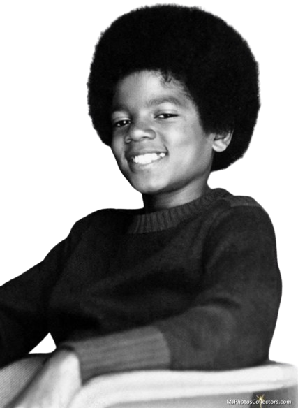

Sobre o cantor:
"Michael Joseph Jackson" nasceu no dia 29 de agosto de 1958, na cidade de Gary, no estado de Indiana, Estados Unidos (EUA).
A família dele era simples e morava em uma casa com apenas dois quartos.
Filho de Joseph, mais conhecido como Joe, e Katherine Jackson, o cantor foi o sétimo dos nove filhos do casal.
Seus irmãos chamam-se: Jackie, Tito, Jermaine, Marlon, Randy, Rebbie, La Toya e Janet.
Jacksons 5
Os irmãos Jackson cresceram ligados à música e, de acordo com Katherine, desde bem novos eles gostavam de cantar e pegar escondidos a guitarra do pai. A mãe de Michael ouviu-o cantando com cerca de cinco anos, enquanto ele arrumava a cama, e ficou encantada com o talento dele.
Desde então, Joe Jackson percebeu a aptidão dos filhos para a música. Sendo assim, sob a supervisão dele, a partir de 1964, as crianças e os adolescentes, conhecidos como os Jackson Brothers, passaram a se apresentar em bares, exposições e, segundo relatos, até em casas de strippers.
Carreira solo de Michael Jackson
Paralelamente à carreira que mantinha com os Jackson 5 quando criança, Michael escrevia músicas da sua autoria.
Michael Jackson já era um dos cantores negros mais conhecidos dos EUA no início dos anos 1980. Chegou a fazer parcerias de sucesso, como em 1982 com o ex-beatle Paul McCartney, com o qual lançou os singles “The Girl Is mine” e “Say, say, say”.
Em 1982, lançou Thriller, o álbum mais vendido da história da música, considerado, inclusive, uma obra-prima. Com o disco, o futuro rei do pop tornou-se o principal cantor negro do mundo e da década de 1980.
Morte de Michael Jackson
O rei do pop morreu em 25 de junho de 2009. Segundo o Departamento de Medicina Legal de Los Angeles, a causa da morte foi overdose de medicamentos. Michael injetou alta dose de Propofol, um anestésico, combinado com remédios para ansiedade e insônia.